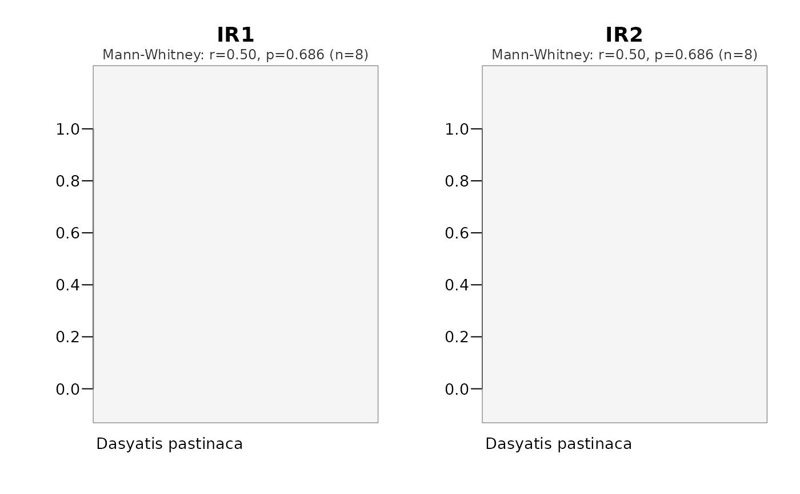

Compare metrics across the levels of a grouping factor
Source:R/plotMetricComparison.R
plotMetricComparison.RdDraws a multi-panel comparison of one or more per-individual behavioural metrics (e.g. activity rate, distance moved, home-range area, association index) across the levels of a single grouping factor - typically a within-individual time-frame such as diel phase or season. One panel per metric shows the distribution of the per-individual values at each level (box, violin or points), and, optionally, annotates a design-appropriate group comparison test.
Usage
plotMetricComparison(
data,
metrics,
id.col = NULL,
split.by,
metric.labels = NULL,
agg.fun = function(x) mean(x, na.rm = TRUE),
plot.type = c("box", "violin", "points"),
paired = TRUE,
test = c("auto", "none"),
p.adjust.method = "holm",
min.n = 6,
flag.significant = FALSE,
alpha = 0.05,
discard.incomplete = TRUE,
display.n = FALSE,
color.pal = NULL,
background.color = "grey96",
outliers = FALSE,
main = NULL,
ncol = 2,
cex = 1,
file = NULL,
width = NULL,
height = NULL,
res = 300
)Arguments
- data
A
mobyDataor data frame containing the metric column(s), an individual column and the grouping column.- metrics
Character vector of numeric column names to compare (one panel each).
- id.col
Name of the column containing animal IDs. Defaults to
"ID".- split.by
Name of the grouping column (the within-individual factor: diel phase, season, ...).
- metric.labels
Optional display names for the panels (defaults to the column names).
- agg.fun
Function aggregating multiple rows per individual x level to one value. Defaults to the mean.
- plot.type
One of "box" (default), "violin" or "points".
- paired
Logical; treat the design as repeated-measures (within-individual). Defaults to TRUE. Set FALSE only for genuine independent-groups factors (e.g. sex, population).
- test
One of "auto" (default; run the design-appropriate test), or "none".
- p.adjust.method
Multiple-comparison correction across the metric panels, passed to
p.adjust. Defaults to "holm".- min.n
Minimum complete pairs/blocks required to run a test. Defaults to 6.
- flag.significant
Logical; if TRUE, outline panels whose adjusted p is below
alpha. Defaults to FALSE (avoids dichotomous "significant/not" reading).- alpha
Significance threshold for
flag.significant. Defaults to 0.05.- discard.incomplete
Logical; if TRUE (default), drop individuals missing from any level for the plotted distributions too (so the boxes match the tested set). If FALSE, all available values are plotted while the test still uses complete blocks.
- display.n
Logical; append the per-level sample size to the x-axis labels. Defaults to FALSE.
- color.pal
Fill colours, one per level. If NULL, a colourblind-safe palette is used.
- background.color
Panel background colour. Defaults to "grey96".
- outliers
Logical; show boxplot outliers. Defaults to FALSE.
- main
Optional overall title.
- ncol
Number of columns in the panel layout. Defaults to 2.
- cex
Global expansion factor for all plot text. Defaults to 1.
- file
Optional output file. If
NULL(the default), the figure is drawn on the current graphics device - the usual interactive behaviour. If a file path is supplied, moby opens a graphics device chosen from the file extension (.pdf,.svg,.png,.jpg/.jpeg,.tif/.tiffor.bmp), draws the figure to it, and closes the device automatically (also if an error occurs). For multi-page or batch workflows, keepfile = NULLand manage the device yourself (e.g.pdf(...); plot...(); dev.off()).- width, height
Output size in inches. Used only when
fileis supplied. IfNULL(default), a size is derived from the figure's structure (e.g. the number of individuals or panels). These defaults are sensible starting points, not guarantees: dense or unusual figures may still need you to setwidth/heightexplicitly. The two can be set independently.- res
Resolution in pixels per inch, for raster formats only (
.png,.jpg,.tif,.bmp); ignored for vector formats (.pdf,.svg). Used only whenfileis supplied. Defaults to 300.
Value
Invisibly, a tidy per-metric data frame of the test results (test, paired, n's, statistic,
df, raw and adjusted p, effect size, method), with the per-(individual, level, metric) values
attached as attr(., "values").
Details
Statistical testing. Comparisons of a per-individual metric across time-frames are
repeated-measures by design (the same animals are measured under each level), so the default
tests respect within-individual pairing: Wilcoxon signed-rank for 2 levels and the
Friedman test for >2 levels (both on the individuals present in all compared levels;
Skillings-Mack is used for incomplete blocks if that package is installed). Independent-groups
tests (Mann-Whitney / Kruskal-Wallis) are used only with paired = FALSE. An effect size
(rank-biserial for signed-rank, Kendall's W for Friedman) is always computed, and p-values are
corrected across the metric panels (p.adjust.method). Tests are suppressed below min.n
complete pairs/blocks.
This annotation is a descriptive/exploratory aid, not confirmatory inference: it is computed on the complete-case subset, and telemetry non-detection is often informative (an animal absent at night because it left the array), so the comparison can be biased in ways no in-plot test corrects. For confirmatory inference, fit a mixed-effects model (individual random effect; a distribution suited to the metric) and check its diagnostics. Significance flagging is therefore off by default; the full test results are returned invisibly.
The metrics must already be columns in data; compute them upstream (e.g. with the calculate*
family) so this function stays a pure visualiser. Multiple rows per individual x level are
aggregated by agg.fun (mean by default).
Examples
# Compare per-individual residency indices between the two species
res <- calculateResidency(rays, last.monitoring.date = max(rays$datetime))
#> Warning: - 'id.col' converted to factor.
res$species <- rays_tags$species[match(res$ID, rays_tags$ID)]
plotMetricComparison(res, metrics = c("IR1", "IR2"), split.by = "species",
paired = FALSE)
#> Warning: Converting 'split.by' to a factor.
#>
#> Metric comparison
#> ------------------------------------------------------
#> Metrics: IR1, IR2
#> Grouping: species (independent groups): Dasyatis pastinaca, Raja clavata
#> Test: Mann-Whitney; correction: holm
#> Incomplete: 8/8 individuals dropped (max 100%); complete-case only
#> ! large data loss - non-detection may be informative; consider a mixed model.
#> ------------------------------------------------------
